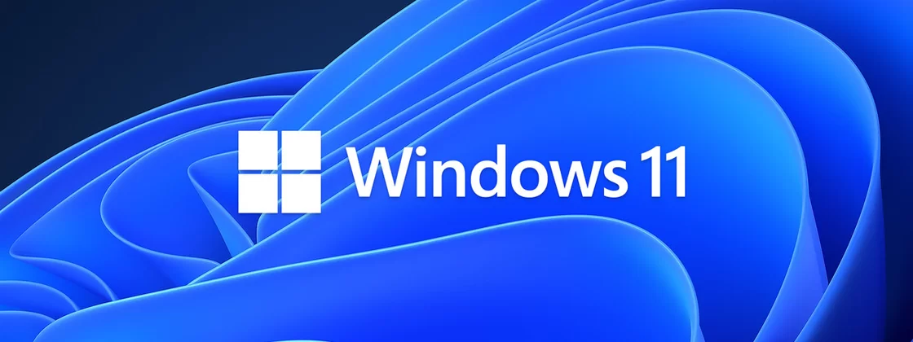
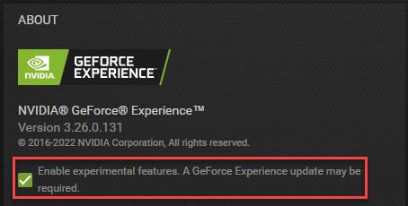

Nvidia lança atualização para corrigir problemas no Windows 11 22H2

A Nvidia correu para oferecer uma nova atualização de driver de suas placas de vídeo para corrigir problemas que alguns dos usuários do Windows 11 enfrentavam depois da atualização 22H2 do sistema. A nova versão do driver chega na sua fase beta, mas já pode ser baixada manualmente ou pelo GeForce Experience.
O motivo da atualização ser oferecida "emergencialmente" vem dos problemas que usuários relatam depois de instalar o Windows 11 22H2 em computadores com GPU da Nvidia. Conforme noticiamos, depois da chegada da nova versão do sistema, alguns jogos tiveram quedas bruscas em sua performance devido a algum bug que derruba o uso da CPU durante a jogatina.
Voltar para a versão anterior do Windows 11 é um paliativo para o problema, mas se você não quiser ficar mexendo na atualização do Windows, que é um pouco mais complexa, dá para se antecipar e pegar a versão 3.26, beta, do novo driver da Nvidia.
Como baixar o driver de emergência
O download pode ser feito no site oficial da Nvidia para instalação manual. Quem prefere usar o programa hub da marca para fazer suas atualizações, o GeForce Experience, também pode apostar na solução.
Basta entrar nas configurações do aplicativo e, na aba de "sobre", marcar a opção "permitir recursos experimentais". Com essa opção marcada, o GeForce Experience não baixa apenas atualizações finalizadas, mas passa a incluir as versões em beta, como a 3.26.